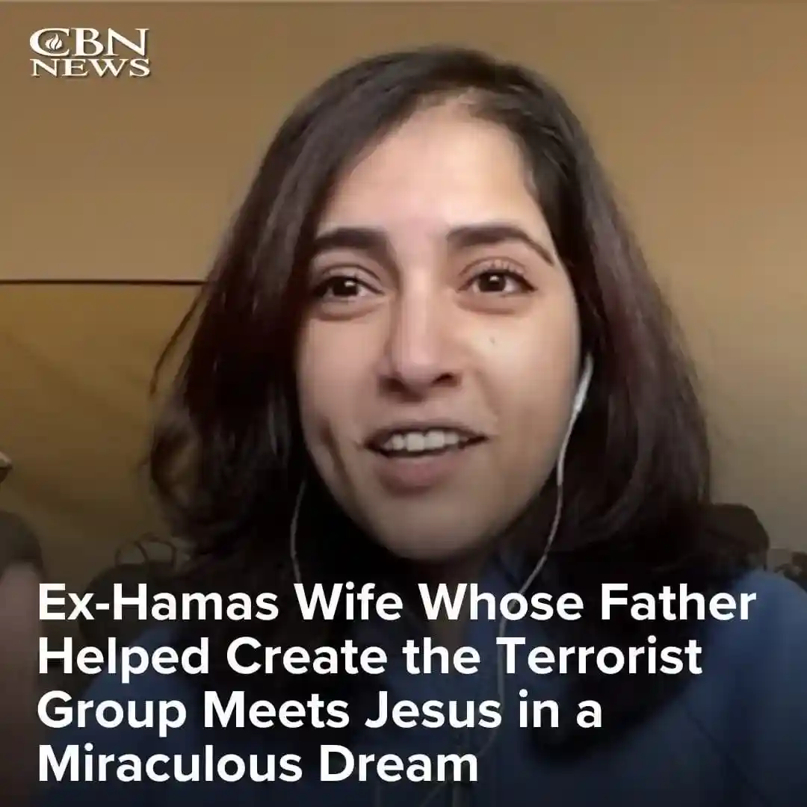

Historia Juman Al Qawasmi to świadectwo które musi być opowiedziane.
“Urodziłam i wychowałam się w Qatarze. Mój ojciec był jednym z założycieli Hamasu, nasi rodzice więc wychowywali nas w nienawiści do Izraela, Żydów i chrześcijan. ”- Juman opowiada w rozmowie z Rajem Nairem z CBN News.
O życiu w strefie Gazy i rządach Hamasu

“Byłam zamężna przez 13 lat w Gazie. Około 2012 roku zaczęłam mieć wątpliwości, ponieważ widziałm co Hamas robił w Gazie kiedy przejął władzę. Twierdzili, że przyszli żeby wprowadzić równość między obywatelami. Obiecywali ludziom różne rzeczy, jednak żadnych obietnic nie dotrzymali. Namawiali ludzi do głosowania na Hamas w wyborach. Ja również zagłosowałam na nich… Hamas tylko pogorszył sytuacje w Gazie. Zaczynali zabijać palestyńczyków. Dawali nam do zrozumienia, że jeśli ktoś nie jest członkiem Hamasu, to ma powód do strachu.”
Szukanie prawdy
“W tym czasie zaczęłam rozmyślać. Czułam, że coś z moją religią nie jest w porządku, nie byłam usatysfakcjonowana bogiem Islamu. Miałam poczucie, że Bóg nigdy nie będzie ze mnie zadowolony. Nie miałam żadnej gwarancji pójścia do Dżanny (raju, nieba). Ciągle żyłam w strachu przed piekłem.“
„Kiedy przeczytałam Koran, nie mogłam uwierzyć, że ten bóg (Allah) jest tym prawdziwym Bogiem. Ten bóg
jest jakimś chorobliwie złym bogiem. Zaczęłam się więc codziennie modlić i mówiłam - Boże, jeśli ty na
prawdę istniejesz, to chcę Cię poznać, chcę Cię spotkać.”
Sen i punkt zwrotny
“Między 2012 a 2014 rokiem, trwała wojna między Hamasem a Israelem. Pewnego dnia IDF zadzwoniło do mojego męża zalecając mu żeby zawiadomił naszych sąsiadów, ponieważ będą zrzucać bomby na to miejsce. Tak – ostrzegli ich, ponieważ Izrael dba o życie cywilów podczas wojny. „
„Tak więc zrzucili bomby na dom naszych sąsiadów. To było dla mnie straszne. Płakałam dużo tej nocy i mówiłam do Boga - Boże, jeśli istniejesz, proszę, chcę ciebie znać! Chcę wezwać twoje imię! Chcę być przez ciebie zbawiona… „
„Tej nocy miałam sen. Widziałam siebie z moją matką - siedziałyśmy na balkonie. Przed nami był księżyc. Ten księżyc był wielki i zbliżał się do nas. Spojrzałam na ten księżyc i ujrzałam twarz Jezusa wychodzącą z księżyca. Mówił ze mną po Arabsku i powiedział - „Ja jestem Panem Jeszuą“. I rozmawiał ze mną. „Jesteś moją córką, nie bój się“ - powiedział. Wtedy miałam poczucie jakby światło wypełniało mój pokój - wiedziałam, że to co przeżywam jest realne.”
Kto to jest Jeszua?
“Nigdy przed tem nie słyszałam jeszcze imienia “Jeszua”, ponieważ nazywamy Jezusa “Isa” w Koranie. Nigdy też nie spotkałam żadnego chreścijanina, ani nikt też nie opowiedział mi o Jezusie. Ale kiedy usłyszałam jego imię, czułam, że to jest piękne imię, a on jest pięknym Bogiem! I po raz pierwszy w życiu poczułam pokój w moim sercu i to że ktoś mnie kocha - takiej miłości nie czułam nawet ze strony mojej rodziny.“
„Zaczęłam więc wyszukiwać informacji na temat tego imienia w Google i znalazłam chrześcijańską stronę internetową. Pierwsze słowa, które ujrzałam otwierając tę stronę to słowa Jezusa - miłujcie swoich wrogów. Zdziwiłam się, ponieważ Koran nas uczy, żeby zabijać naszych wrogów. Jak to możliwe - miłować wrogów?! Zaczęłam wysyłać wiadomości tej stronie. Osoba która mi odpisała, powiedziała mi, żebym przeczytała Biblię. Powiedziała też, że tysiące muzłumanów widzi Jezusa w swoich snach i nawraca się. Nie byłam zatem pierwszą taką osobą. A ja myślałam, że jestem jedyną! Tak więc przyjęłam Jezusa do swojego życia i... zaczęła się moja podróż z nim.”
Jak Juman widzi obecną sytuację w Gazie
“To zawsze Hamas zaczyna robić problemy. Żylibyśmy w pokoju, gdyby nie “Intifada”. Jestem Palestynką, mam nawet ciągle przy sobie palestyński paszport. Cytałam Biblię, wiem, że Żydzi mają prawo mieszkać na tej ziemi, którą Bóg im obiecał! Tymczasem w Koranie nie ma ani jednej wzmianki o “Palestynie”. Ten obszar to ziemia dla “bnei Israel” - synów Izraela. Ale Hamas przyszedł i chciał ich wyrzucić z ich ziemi - zniszczyć.
Moglibyśmy żyć w pokoju, gdyby nie Hamas. Ponieważ, za każym razem kiedy zapanuję pokój, Hamas zaczyna wystrzeliwać rakiety na Izrael. To dla tego izrael zaczynał zrzucać również bomby. Ale przed tem - nic nie było. Pamiętam jeszcze, że jak się skończyła wojna w roku 2008 - Izrael wysłał nam pieniądze, żeby odbudować Gazę! Izrael oznajmił, że Gaza mogłaby się stać jak Syngapur, jedynie zawrzyjmy między sobą pokój.
Ale Hamas nie chcę pokoju. Oni chcą tylko zabijać, gnębić ludzi i utrzymać swoją okrutną władzę. Pamiętam jak mój były mąż rozmawiał z innymi i powiedział “teraz budujemy miasto pod miastem”. Wzięli wszystkie pieniądze które inne kraje im przesłały i zbudowali wszystkie te tunele podziemne. Nigdy natomiast nie wybudowali ani jednego schronienia dla cywilów! Sami się kryją w swoich tunelach i wykorzystują ludzi, dzieci - jako żywą tarczę! Oni nie dbają o nasze życie. Niestety.
Myśl samodzielnie!
Nie bój się myśleć. Nie bierz wszystkiego co ci mówią jako fakt. Hamas nie chroni w ogóle Gazy! Gdybym miała powiedzieć kto jest naszym wrogiem - Hamas. Hamas jest naszym wrogiem, oni nie dbają o palestyńczyków.
Oni praktykują “kult śmierci”. Biorą dzieci już między 4 a 5 roku życia ich indoktrynizują swoim kultem. Uczą ich werstetów z koranu, uczą, jak nienawidzieć Izrael, a nawet jak używać broni. Uwierzcie mi, zaczynają to robić już z dziećmi pięcioletnimi.
Bóg natomiast dał nam mózg i rozum po to, żeby myśleć samodzielnie. Żeby znaleźć drogę. Jezus kocha muzłumanów. On kocha nas wszystkich tak bardzo i chcę nas uwolnić! Uwolnić od strachu. W nim nie musimy się już bać. Jeszua jest drogą!